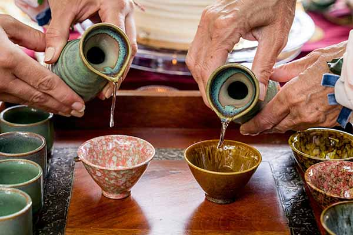

イベント情報

15
3月
日本酒試飲会
18:00 - 20:00
店舗内
有名な酒蔵のプレミアム日本酒を試飲できる特別な体験。日本酒の醸造技術や料理とのペアリングについて学びましょう。

22
3月
ワインと料理のペアリングワークショップ
19:00 - 21:00
店舗内
専門ソムリエと一緒にワインと料理のペアリングの芸術を発見。様々なワインを試飲し、食事体験を向上させる方法を学びましょう。

29
3月
日本ウイスキー試飲会
18:30 - 20:30
店舗内
日本ウイスキーの特徴を体験。様々なスタイルを比較し、日本でのウイスキー製造の歴史について学びましょう。
イベント情報を最新に保ちたいですか？